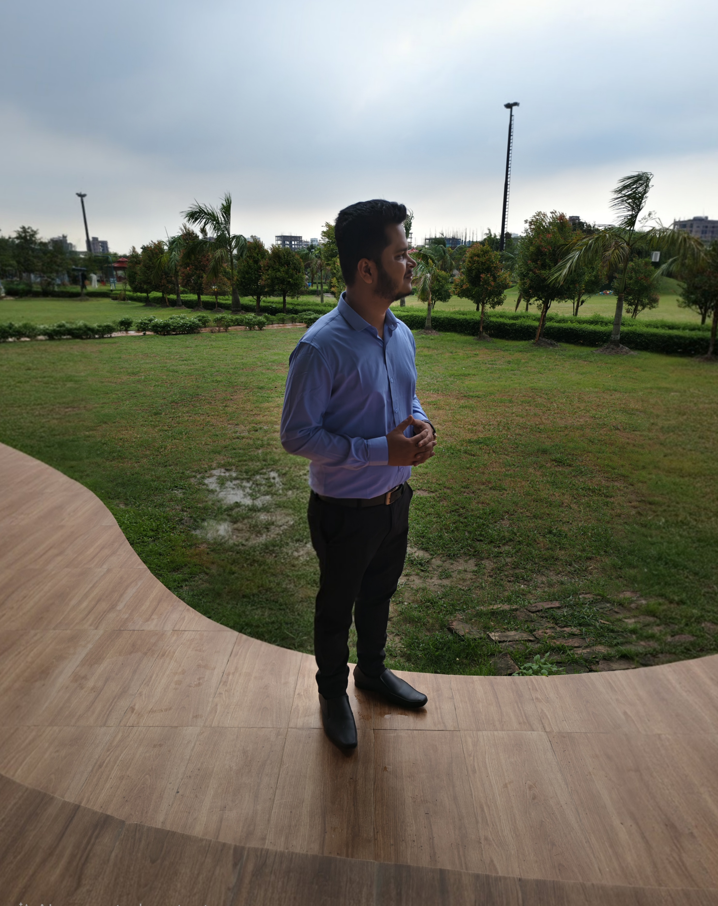

About Me
I’m Foyjul Islam Raju, a Web Designer & Front-End–Focused Full-Stack Developer with a strong foundation in HTML5, CSS3, JavaScript, React, Python, and Django. I build clean, responsive, and scalable web applications with a strong focus on performance, usability, and maintainability.
With a background in competitive programming, I bring strong problem-solving, debugging, and analytical skills to technical support and software quality assurance. I enjoy collaborating with teams and delivering reliable, high-quality software solutions.
I’m passionate about continuous learning and best practices, always aiming to improve user experience, software quality, and system reliability by turning technical challenges into real-world solutions.